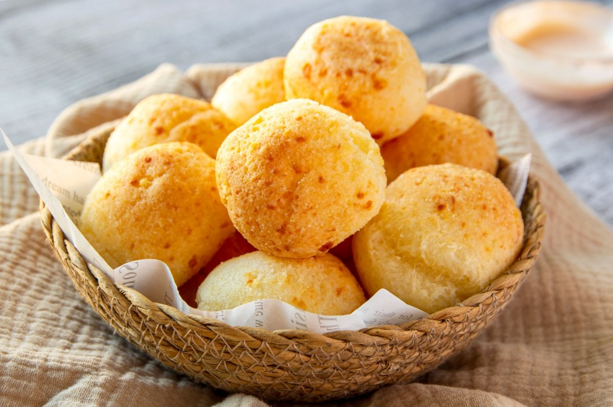

Argentinian chipás are little bitesize cheese buns. They are like little cheese puffs with a gooey interior. Various versions of this exist in Latin American countries, like Brazilian Pão de queijo. You can use various cheeses in this, but one thing to note is that different cheeses have different moisture content so that will affect the wetness of the dough. Made with tapioca starch instead of flour makes them gluten free and adds to the chewy texture. Best eaten warm and fresh from the oven as they will go stale quite quickly. This recipe makes 12 chipás.